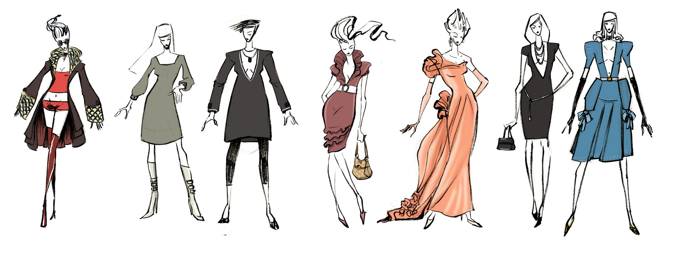
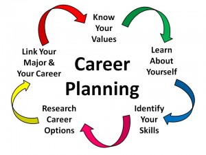
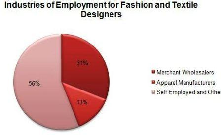
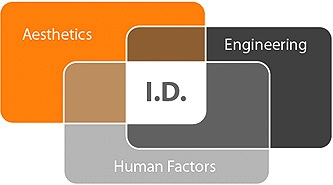
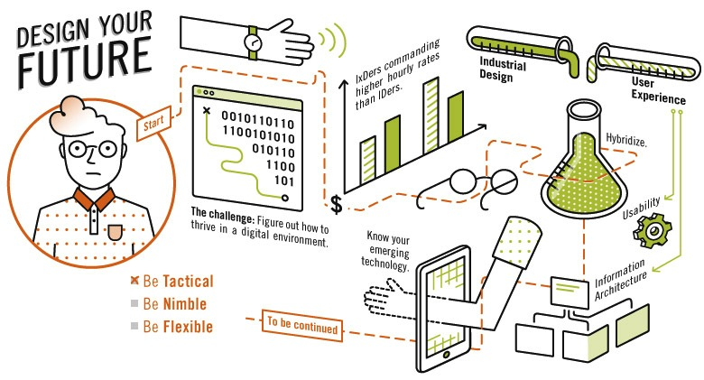

Career after 12th & Graduation
- Career after 12th standard is full of choices. In such condition, from among all the fields you are good at, you need to figure out what will suit you the most when it comes to building a career. Evaluate your strengths and weaknesses, likings, aptitude and interests.
{kind=link}
{kind=link}
- By the end of 10th standard we suggest one should be clear about which field to opt for after 12th standard studies. Accordingly the child can choose the subjects in 11th standard.
- Students from any stream (Science, commerce, arts at 12th std) can get into designing field. But few institutes require science compulsory at 12th std for admission. So it’s better to list out by 10th Std the colleges you will be opting for further education after 12th.
- The field of designing is also having good placements and income just like other fields such as engineering, medical, financial planning and so on.
- Here we would strongly like to emphasize the fact that 12th standard education and clearing entrance exam for admission to designing college both are equally important. Passing both are the eligibility criteria for admission to the design college. Child had to create balance between both.
- Because of the extreme pressure of 12th standard studies we recommend the student to prepare for entrance exam from 9th standard onwards.
- How to decide whether child is fit for the field of designing: If child is having good observation power, designing and imaginative expression he/ she is surely fit for the field of designing.
- If you wish to check the child’s aptitude that whether he/she is fit for designing field, you can visit our studio with prior appointment for aptitude test of child. This test is conducted in presence of parents.
- Best time for preparation: Student can start preparing for entrance exam from standard 9th onwards. The sooner you start, the better are your chances of success.
-
Top Design Colleges in India
-
Top Architecture Colleges in India
-
Placement and Package in Design
Fashion, Textile & Apparel Design
{kind=link}
- Fashion Design
- Textile Design
- Leather Design
- Accessory Design
- Knitwear Design
- Fashion Communication
- Apparel Production
- Apparel Design and Merchandising
- Lifestyle Accessory Design
Industrial Design
- Product Design
- Furniture and Interior Design
- Ceramic and Glass Design
- Transportation and automobile Design
- Toy and Game Design
- Architecture
- Civil Construction
{kind=link}
Communication Design
- Graphic Design
- Animation Design
- Film and Video Communication
- Exhibition Design
- Photography Design
Career After Graduation
B.A / B.COM / B.Sc graduates can also apply to design colleges such as NID/ NIFT / MIT/ IIT / MSU/ DA-IICT. Before applying check the eligibility criteria prescribed for each course. OR B.E/ B.Tech/ B.Des/ B.Arch/ B.Int.Des/ BFA/ Graduation in Textile, Knitwear or Fashion, Home Science with Textiles & Clothing, BVC/ B.Litt/ Graduation in Commn. Media, Film & TV, Mass Media Computer Science, I.T., Electronics, Engineering, or degrees from Humanities or Social Sciences can apply to various post graduation courses Design courses available with various reputed design colleges are mentioned below:
{kind=link}
- IIT PG Courses
- NID PG Courses
- NIFT PG Courses
- MIT PG Courses
- CEPT PG Courses
- Srishti PG Courses
- MSU PG Courses Sir JJ College of Arts
- Animation Film Design
- Apparel Design & Merchandising
- Ceramic & Glass Design
- Design for Digital Experience
- Film and Video Communication
- Furniture and Interior Design
- Graphic Design
- Information & Interface Design
- Lifestyle Accessory Design
- New Media Design
- Photography Design
- Product Design
- Strategic Design Management
- Textile Design
- Toy & Game Design
- Transportation & Automobile Design